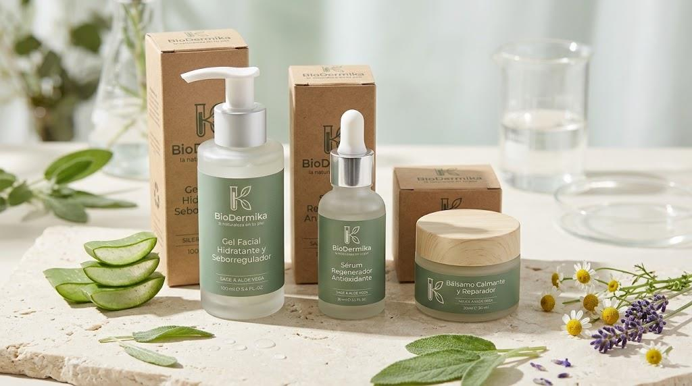

Sérum Regenerador Antioxidante
Té verde y ácido hialurónico vegetal
Sérum ligero de rápida absorción, sin sensación grasa ni pegajosa. Ayuda a hidratar y regenerar la piel.
- Contenido
- 30 ml
- pH
- 5.5
- Uso
- 3 a 4 gotas sobre el rostro limpio, mañana y noche